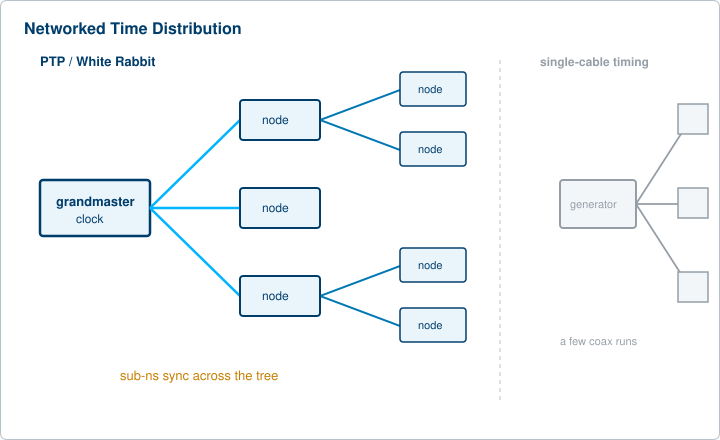

The story of precision timing is the story of the decimal point moving left. Nanoseconds gave way to picoseconds, and picoseconds are now giving way to femtoseconds. The instruments have not just gotten faster. They have changed shape. Timing is becoming a network service, a chip-scale module, and a quantum resource all at once. This closing chapter steps back from the bench and looks at where the field is heading, then ends with a short note on where Berkeley Nucleonics fits the picture.
The single spec that never stops moving is jitter. Each generation of experiment needs triggers and delays that are stable to a smaller fraction of the event being measured, so the headline number keeps shrinking.
Consider the scale. Light travels about three millimeters in ten picoseconds. In ten femtoseconds it covers only a fraction of a micron, less than the width of a connector's contact. Optical timing distribution links in research settings have already demonstrated relative timing precision below ten femtoseconds. To deliver that, an instrument has to resolve intervals shorter than the time it takes light to cross the gap between two pins.
The demand comes from the science. Ultrafast laser work, pump-probe spectroscopy, and attosecond physics all chase events that unfold in femtoseconds. As the physics gets faster, the timing has to get quieter. The push toward the femtosecond regime is not a marketing race. It is a hard requirement set by the experiments.
Atomic clocks based on optical transitions are moving out of national metrology labs and toward field deployment. Their accuracy ceiling sits far above traditional microwave references, which makes them the obvious foundation for the next era of timing.
The hard part has never been building the clock. It has been getting that optical-grade stability out of the clock and into the electrical and RF systems that actually consume it. Optical-to-RF timing distribution addresses exactly this. A stable optical reference is fanned out over fiber, then converted to electrical triggers at each endpoint. This is one of the more active frontiers in the field, and the optical-clock landscape itself is organizing into distinct technology families, each trading accuracy against size and manufacturability.
Distributing time used to mean running a cable. Now it increasingly means running a protocol.
IEEE-1588, the Precision Time Protocol (PTP), synchronizes distributed devices over standard packet networks. It lets ordinary Ethernet carry a shared notion of "now" without dedicated timing wiring. White Rabbit, developed openly at CERN and built on top of PTP, pushes that synchronization from the nanosecond range down into the picoseconds. It does this by combining PTP with synchronous Ethernet and precise phase measurement, and reported link performance lands in the tens of picoseconds.
The significance is architectural. Timing is becoming a network service rather than a box with outputs. A facility no longer needs a star of coaxial cables radiating from one generator. It can deliver sub-nanosecond synchronization over the same fiber and Ethernet that already carry its data.

Many systems lock their local oscillators to GPS or GNSS so that a low-cost crystal can inherit the long-term accuracy of an atomic reference in orbit. This is cheap, accurate, and widely deployed. It also has a weak point.
The weak point is what happens when the satellite signal is lost, jammed, or spoofed. The window during which a system must keep time on its own is called holdover, and the quality of the local oscillator decides how long the system stays within spec. Oven-controlled crystal oscillators are commonly specified for several hours of holdover. The clear market trend is toward longer and more trustworthy holdover, driven by a simple realization: GNSS can no longer be assumed to be always available.
Chip-scale atomic clocks (CSAC) are part of the answer. Atomic stability used to require a rack and a power budget. CSACs put rubidium or cesium references into packages small enough for portable and embedded use, with good holdover in a compact form. They show up wherever you need atomic stability but cannot carry a full instrument: portable references, distributed sensors, and even quantum experiments where two ends must stay coherent without a physical timing link between them.
Quantum work is one of the hungriest consumers of precision timing. Qubit control depends on phase-stable, low-jitter pulse sequences, because a noisy trigger smears the very coherence the system is built to protect.
Single-photon experiments add a second demand. They depend on time-tagging photon arrivals with picosecond resolution, often across kilometers of fiber. One recent demonstration disciplined two atomic clocks against each other to enable distributed quantum-correlation measurements over a ten-kilometer fiber spool, time-tagging single-photon detections at each end. As quantum systems scale up in qubit count and physical extent, their timing and synchronization requirements scale right along with them. The future of quantum is, in large part, a timing problem.
Timing generation is migrating into FPGAs and software-defined architectures. The advantages will be familiar to anyone who has watched the rest of test and measurement evolve.
Higher channel counts come almost for free in a dense logic fabric. Reconfiguration happens in firmware rather than hardware, so behavior can change after deployment. Integration tightens, because the timing engine can sit on the same board as the rest of the system instead of in a separate chassis. The trend points toward timing engines that are programmable, dense, and embeddable, rather than fixed-function bench boxes. That does not retire the bench instrument. It widens the menu, adding board-level and OEM options at one end while rack-dense systems grow at the other.
LIDAR is fundamentally a timing measurement. Range is derived from time of flight, so range resolution is limited by timing resolution, full stop. A LIDAR that cannot resolve picoseconds cannot resolve the corresponding millimeters.
Growth in automotive LIDAR and autonomous systems is pulling steady demand for fast, low-jitter triggering and gating, often in compact and cost-sensitive forms. The same logic runs through photonics generally. The trigger that fires a laser and the gate that opens a detector both live or die on their jitter. As ultrafast photonics spreads from the optics lab into ranging, imaging, and sensing products, the quiet trigger goes along for the ride.
The common thread under telecom, data centers, and finance is that more systems now span more places and still need to agree on time.
Fifth and sixth generation wireless need tight synchronization to coordinate at high carrier frequencies, where a small timing error becomes a large phase error. AI data centers need precise time across servers and racks, and modern timing modules increasingly combine GNSS, synchronous Ethernet, and PTP with automatic source selection so that no single failure breaks the clock. Financial systems need defensible, traceable timestamps for trades and audit. In every case the requirement is the same: a shared, traceable notion of "now" across a system that has no single location.
The broad pattern across test and measurement is convergence. Timing, signal generation, and synchronization are being integrated rather than bought as separate boxes. Channel counts climb. Form factors split toward two poles at once, rack-dense systems for large installations and compact or board-level modules for embedded and OEM use. Through all of it, the spec that keeps moving is jitter.
Berkeley Nucleonics has built precision pulse and delay generators since 1963, and the current lineup maps cleanly onto these trends. For work pushing toward the femtosecond regime, the Model 745T family offers picosecond-class resolution with a 1 ps delay option. Where low jitter across many channels matters, the high-density Model 588B delivers 250 ps resolution with under 5 ps jitter across 12 or 24 channels. The Model 765 covers the fast-edge, high-rep-rate end with 800 MHz operation and 10 ps resolution for LIDAR and ultrafast photonics. And the portable Model 525 carries six channels of sub-50 ps timing into the field, where chip-scale references and distributed sensing are heading. As timing splits toward rack-dense and compact poles at once, BNC already builds for both ends of that range.
The trends in this chapter move quickly, and the instruments move with them. For deeper, course-style treatment of pulse generation, synchronization, and the BNC lineup, see the companion courses at academy.berkeleynucleonics.com. To match a specific application to a current model and its authoritative specifications, talk with a BNC engineer at berkeleynucleonics.com.
Check your understanding. Five quick questions on falling jitter, optical clocks, network time distribution, GNSS holdover, and quantum timing.